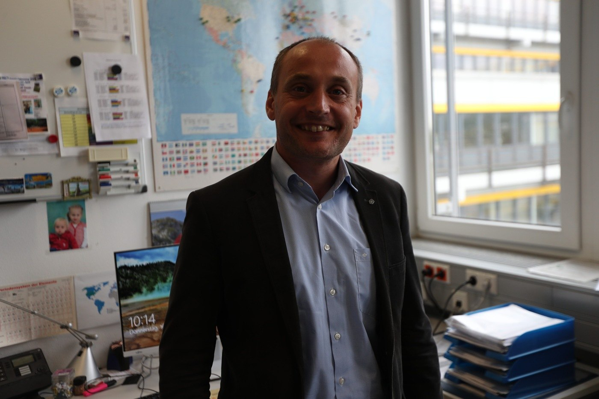

Edited interview
Oleg Prymak
Seeing a problem through someone else’s eyes
University of Duisburg-Essen
Interview: 16 May 2019 · 4 minute read

What brought you from Ukraine to Germany?
I studied solid-state physics in Ukraine and began working on biomaterials, including ceramics related to bone. I could investigate their physical properties, but I also wanted to understand how to change the materials themselves.
That meant learning more chemistry. Professor Epple was working on related questions from a chemical perspective, and I applied to do my PhD with him. I came to Germany in 2002 and completed the doctorate in 2005.
After a postdoc at the Max Planck Institute for Iron Research in Düsseldorf, I returned to the University of Duisburg-Essen in 2010 to lead the X-ray diffraction work and coordinate international projects.
Did you have that career planned when you began studying?
No. I think of it as climbing a mountain in cloudy weather. At the bottom, you cannot see exactly what is at the top. You gain a better view as you go.
As I collected experience, I began to understand what I enjoyed and what I could contribute. Biomaterials interested me because the work could eventually help people, for example through better materials for implants.
That sense of purpose developed through doing the science, rather than arriving as a complete plan before I started.
How do international collaborations begin?
Sometimes with a conversation at a conference. One of our PhD students presented work on nanoparticles in the United States and met a professor with related interests. She brought the contact back, we discussed possible shared questions, and a project developed.
That led to collaboration with Notre Dame on nanoparticles for imaging, including visits in both directions. Tracie McGinnity came to work with us, and I supervised her visit.
Funding makes the exchange possible, but the scientific relationship begins with people recognizing something they could do together.
What do visiting researchers add beyond another pair of hands?
A different way of seeing the problem. When you have looked at something repeatedly within the same group, it is easy to keep moving in the same circle.
Someone with another background may question an assumption or approach the work differently. That exchange of knowledge and perspective is one of the reasons I enjoy coordinating international projects.
It is not only about access to equipment. Learning from another person’s thinking can be just as important.
What was difficult when you first moved?
Language was an immediate challenge. I had studied some German, but living and working in it was different. I also needed to understand the expectations and habits of a new research environment.
I was interested in why people approached things differently, which helped me adapt. Over time, I came to appreciate the emphasis I encountered on preparation, responsibility, and becoming capable of handling work independently.
Moving was not easy, but it gave me opportunities to learn in ways that would have been harder if I had stayed within the same setting.
Which mentors helped you along the way?
My supervisor in Ukraine helped introduce me to biomaterials and international exchange. That connection helped me learn about Professor Epple’s work and apply to join his group.
Professor Epple then welcomed me despite my different background. I had a great deal to learn in chemistry as well as in language, and working with him was a positive experience. It was one reason I was glad to return after my postdoc.
Those relationships helped create opportunities, but I also had to do the work needed to use them.
How do you balance international work with family life?
My wife is also a scientist, and we have three children. Coordinating work, travel, and family requires planning and support. Sometimes relatives have helped when we needed to travel together.
Sport is also important in our family. Both my wife and I have sporting backgrounds, and our children are active too. It gives us something outside research and helps connect mental work with physical activity.
I also enjoy languages. Learning another language can help you understand how people express themselves and make it easier to build relationships when you travel.
What would you tell a student considering work abroad?
Keep an open mind. Look beyond the boundaries of what you already know and seek experiences that may change how you think.
Moving abroad does not have to mean losing a connection with home. I have continued collaborating with colleagues in Ukraine and helping create opportunities for students to visit Germany. An international career can connect places rather than simply replace one with another.
What makes a career meaningful to you?
Doing something you want to do and finding satisfaction in it. Science is not the only worthwhile path; someone else may find that in music or literature.
For me, scientific work, collaboration, and the possibility of making something useful fit together. Understanding that about yourself matters more than following a path only because someone else expects it.